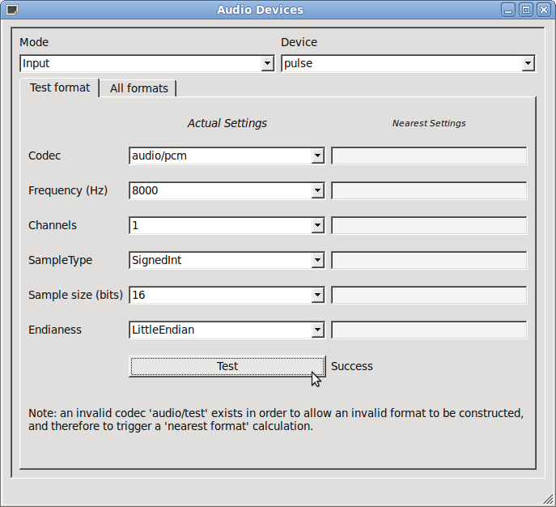

Audio Devices Example
The Audio Devices example shows the application of the audio devices APIs
This example shows how to create a simple application to list and test the configuration for the various audio devices available on the device or machine. This is done using the QtMobility Multimedia API.

Files: